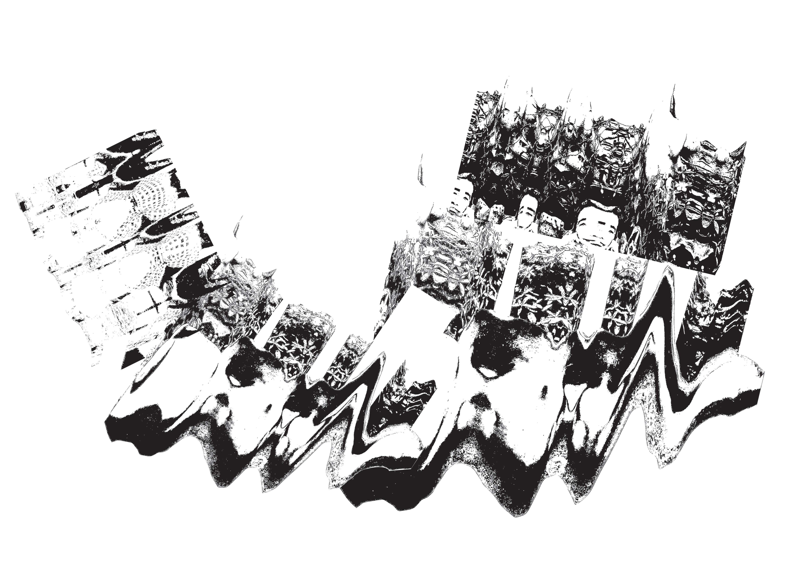

Overview
Introduction
Homework
Make Experiments
Task 1
Threshold & Paths
Task 2
Text on Path
Task 3
Blend & Style
Submit
Upload Work
Create Text on Path Effects
Make experiments
Threshold & Paths
Add text on path
Blend & style
Upload to Padlet
You will create text on path effects using photocopier or scanner experiments. The text will follow the shapes in your images.
Make photocopier or scanner experiments
Apply threshold for high contrast
Add text that follows paths
Apply blend modes & effects
These artists use photocopiers, scanners, and digital manipulation:


Write down any artists you like — you'll add proper citations to your work in class.
Do this before class. Choose ONE option below.
Use your Term 2 project images:
Scan objects directly:


Learn photocopier and scanner techniques:
Make your image high contrast and create paths for text.
Always work on a duplicate layer to keep your original safe!
Add text that follows the shapes in your image.
Your text will follow the path! Try these ideas:
These fonts work well for photocopier/scanner art:
"I am interested not in individual readings, but in constructing networks of images and meanings capable of reflecting the complexity of the subject."
— Wolfgang Tillmans
TEXTURE • MEMORY • DECAY
TRANSFORMATION • TRACE
DISTORTION • REPRODUCTION
Use keywords from your Term 2 project
Style your text and add proper artist citations.
Add proper citations to your design:
"A constant focus of [my work] was the challenge to conceptualize 'time' through the essentially static medium of photography,"
— William Larson (1978)
Larson, W. (1978) Fireflies [Teleprinter prints]. MoMA, New York.

Share your experiments and final design.